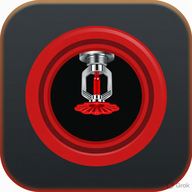

| NPS | OD | Wall | ID |
|---|
Steel dimensions follow UL/FM listed fire-sprinkler mill data (ASTM A135 / A795) used with NFPA 13. 8 in and 10 in Schedule 10 fire pipe is commonly 0.188 in wall, heavier than ASME B36.10 Schedule 10. SS 10S / SS 40S follow ASME B36.19 (ASTM A312). 8 in and 10 in 10S is thinner than fire Sch 10 mill steel. Stainless C-factor 150. CPVC is SDR 13.5 (ASTM F442 / BlazeMaster), C-factor 150. Steel C-factor 120. ID is what hydraulics use. Confirm against the mill cut sheet and the adopted code edition before you cut or calc.
| inHg | L/s | L/min | m/s |
|---|
| NPS | Sensor | Width | Drill | Use |
|---|---|---|---|---|
| 2–5" | Size 1 | 0.590 in | 3/4 in | 50–125 mm |
| 6–8" | 1 or 2 | 0.590 / 1.060 | 3/4 or 1-5/16 | 150–200 mm |
| 10–12" | Size 2 | 1.060 in | 1-5/16 in | 250–300 mm |
| >12" | Size 2 or 3 | 1.060 / 1.935 | 1-5/16 or 2-1/2 | 300 mm+ |
Probe sizes: 3/8 in (9.53 mm), 20T (20.0 mm), and 21T (21.0 mm). DP is inches of mercury (inHg). 20T K = 0.637 at DN50 Sch 40; 21T K = 0.672 at DN100 Sch 40. Other sizes and walls use the same blockage formula on the mill ID (thinner wall → bigger ID → higher K). 3/8 in uses Diamond II 15/16 constants. Type a K factor to match the laminated card; Use probe K puts the formula back. Sch 10/40 are carbon mill IDs; SS 10S/40S are ASME B36.19; Class B copper is AS 1432 Type B. High blockage on a fat probe in a small pipe is flagged. Use the laminated chart that shipped with the probe for a certified test.
| DN | OD | PCD | n | Hole | Bolt |
|---|
AS 2129 Table D (~700 kPa), E (~1400 kPa), F (~2100 kPa), H (~3500 kPa). Table D and E often share OD/PCD on small sizes; from about DN90/100, Table E has more bolts and/or is thicker — they do not always mate. ANSI / ASME B16.5 Class 150 and 300. PN16 is EN 1092-1. Field ID: count the bolts, measure OD and PCD. Confirm against the current standard before you drill or bolt up.
Enter flow (L/s) and pressure (kPa). The curve is a spline through the points.
Curves autosave by job name. PNG still goes to Pictures/FitterCalcs. Plot is a field record, not a certified lab curve.
Autosaved pump curves. Open one to load it back onto this page.
Hazen-Williams friction plus 9.81 kPa per metre of rise. Elbows use 90° standard equivalent length (fire tables). Steel default C=120, stainless and CPVC C=150. Field estimate — not a certified hydraulic design.
Gross = full internal volume of the shell. Effective = volume between the usable high water (overflow minus air gap, default 20 mm per AS/NZS 3500.1) and the usable low water (above suction/vortex inhibitor, default 150 mm — typical AS 2304 / AS 2419 field value; enter the actual plate height). Duration uses effective litres ÷ flow. Field estimate — confirm on the current Standard.
AS 1851-2012 (plus Amendment 1:2016) is the Australian Standard for routine service of fire protection that is already installed. It is not the design/install Standard. Sprinklers are designed to AS 2118, hydrants to AS 2419, pumps to AS 2941, tanks to AS 2304, detection to AS 1670, hose reels to AS 2441, and so on. AS 1851 tells you how often to come back, what to look at, what to test, and what to write down so the installed system still works the way it was designed.
Routine service has four parts: inspect (look and compare to last time / baseline), test (prove it actually works — alarm, flow, pump start, trip), preventative maintenance (batteries, fuel, grease, clean, replace consumables), and survey (does this system still match the building — occupancy, storage, missing heads, blocked hydrants).
How visits stack. A yearly visit includes the monthly and six-monthly items, then the extra yearly work. A five-yearly visit includes the yearly work plus a deeper survey / internal / overhaul set. The owner may run monthly items weekly. Work is done by a competent person for that system type, and results go in the logbook (pressures, defects, isolations, who did the work). Five-yearly surveys need baseline data: as-installed drawings, pump curves, tank levels, head types.
Frequencies used across the Standard: monthly, 3-monthly, 6-monthly, yearly, 2-yearly, 5-yearly, then 10 / 25 / 30-yearly where listed. Table 1.11(B) tolerances (so a visit is not late/early by accident): monthly ±5 working days · 3-monthly ±10 working days · 6-monthly ±1 month · yearly ±2 months · 5-yearly ±3 months · 10/25/30-yearly ±6 months.
Pick a system and frequency below, or search (pump monthly, hydrant flow, damper, tank internal). Cards are a field memory aid of typical checks — not a copy of the copyrighted tables. Confirm the exact item and pass/fail in the current Standard on site.
Field lookup for AS 1851-2012 (incl. Amdt 1:2016). This is not the Standard and not a substitute for the current published document. Confirm the exact table item and pass/fail on site.